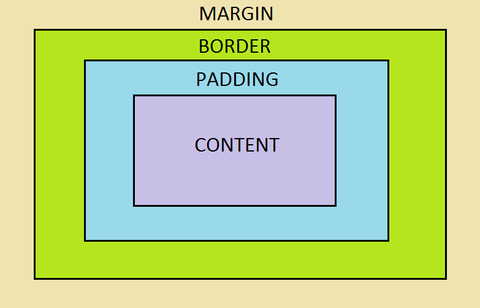

Margin, border, and padding are rules that allow web designers to specify the shape of a piece of content on a webpage. CSS treats each HTML element like a box. CSS uses 3 main properties to shape the appearance of the box: margin, border and padding. Once you’ve shaped your box, you use positioning to place the box where you want it on the page.
Each piece of content on a website, such as text or an image, is surrounded by padding, a border, and margin. Here is a visual representation (often called the “box model”):

- Content:
- The content of the box, where text or images are located.
- Padding:
- Clears a transparent area around the content.
- Border:
- A boarder that surrounds the padding. Every box has a border (even if it’s 0px wide or not visible).
- Margin:
- Clears a transparent area outside the border.
Let’s take a look at how we would use these terms on a paragraph of text. Here is the paragraph with no CSS:

Let’s create some CSS to specify the shape of the text box:

Here is the resulting element:

Let’s take a look at what each property did to the box:
- 300px (the width of the content)
- 25px (added 25px of padding space around the text)
- 15px (created a 15px wide blue border)
- 100px (created 100px of margin around the border)
Now you know the difference between padding, borders, and margins. You also know the basics of the box model. Now go forth and make beautiful things!